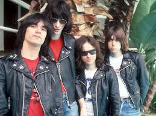

The lyrics are more deep and personel
The best guitarists in the world

Origins
Rock began in the late 1940's where the electric guitar playing from the most popular
genres at the time Country and Blues, fused together with the bass playing of R&B, the
vocals and piano of Soul, and the drum playing of Jazz.
Pioneering rock artists such as Elvis and Chuck Berry leaned on blues structure
which featured a rebellious freedom in contrast to the pop music at the time.

British Invasion
In the 1960s a new form of Rock N Roll began. In 1963
the then newley formed Beatles realeased their first U.S. single. "Please Please Me" which was an imediate success
in the following year, the band visited the U.S. which begun a time where British bands started to become popular
in the U.S. called the British invasion. Other bands during this time
were The Rolling Stones, The Who, and The Kinks (the latter two helped pioneer Hard Rock)
This started the British Invasion, and many of these bands still influence artits to this day.

Psychedelic Rock
Near the end of the British Invasion in the mid-to-late 60s the US entered the Vietnam War.
During which a group of protesters called hippies emerged, influenced by drugs such as LSD.
To capture this new audience a new, more experimental version of rock was created called Psychedelic Rock.
Many bands of the British Invasion like The Beatles, and Stones changed their sound for this music.
Two forms of Psychedelic Rock were formed, bands like The Doors, and Pink Floyd stayed true to
Rocks roots with a more trippy twist, while bands like Cream and The Jimi Hendrix Experience played louder
heavier disorted guitar based rock that would help pioneer metal two years later.

Heavy Metal
In 1968 to 1969 rock bands abandoned their pychadelic flairs, and cranked their amps to 11
for music that was more lean and punching. This accompanyed by the afformentioned Cream
while new commers Led Zepplin, Deep Purple, and Black Sabbath were formed in England. In late 1969 Sabbath begun the recording
for their self-titled debut album (which was realeased in the following year). The music was louder and the lyrics were darker
focussing on themes such as drug use (Sweet Leaf), the occult (Black Sabbath), and political corruption (War Pigs).
Meanwhile, Deep Purple (who started as a pychadelic band) formed a new line up that was more cleaner than sabbath. Meanwhile, in America
Ronnie James Dio formed his band called Elf, and then moved to Rainbow (which was founded by Purples guitarist Richie Blackmore)
and a new band that was also from brimingham called Judas Priest was founded that influence wearing obcene amounts of leather to metal
in the following years.
The 70s & 80s
In the 70s & 80s rock started to mature and develop several genres and bands in the UK, and US
in the early 70s a form of rock in flamboyant costumes called Glam Rock was formed with acts like
David Bowie, Slade, and Mott the Hoople. A long complex form of rock called progressive rock with Pink Floyd and Rush
also formed out psychedelia. In the mid 70s bands like Queen and Boston started to get popular
Bands like Lynyrd Skynyrd formed Southern Rock. In the mid to late 70s punk emerged from bands like the Stooges, Iggy Pop, Ramones, and the Sex Pistols
during the 80s Ozzie Osbourn started his solo career, while Dio became the vocalist for Sabbath. and would form his own band
it was also during this time that Metal started to become mainstream with acts like Iron Maiden, and Quiet Riot, During this time there was also the
New Wave of British Heavy Metal, where only a few bands survied MTV like Def Lepord, and Glam Metal acts like Poison and Bon Jovi
it was also during this time where thrash metal bands like Metalica and Motorhead emerged.
Grunge and Alternative
During the 90s Alternative rock started to become Mainstrean with acts like Red Hot Chillie Peppers, and R.E.M
Also during this time a mix of metal and punk emerged called grunge